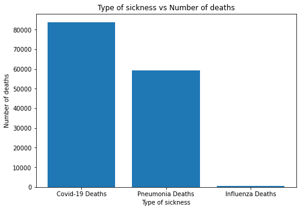
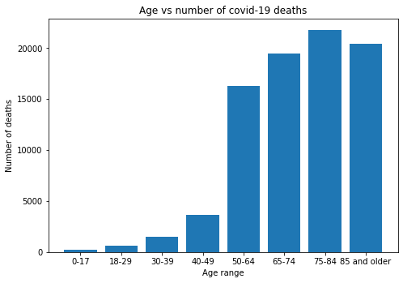
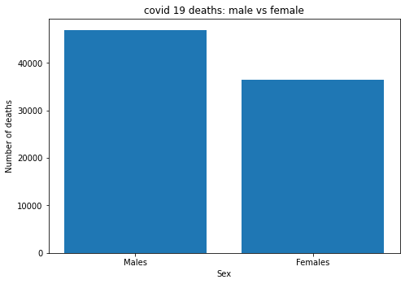
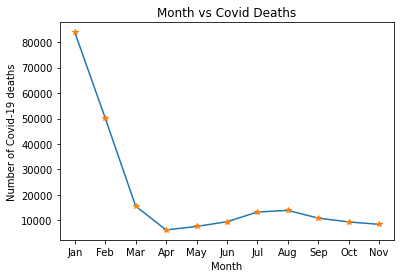
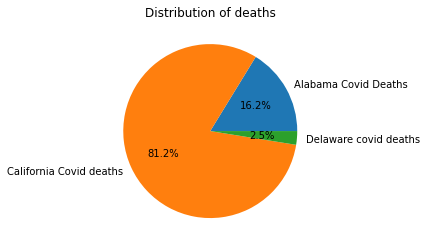

As we all know, in 2020 everyones lives had turned upside down. Covid-19 had hit the whole world, especially America, with there being a reported of over 32 millions covid cases in the US. From that, this tutorial will introduce a deep analysis on data related to covid-19 in the US. More specifically looking at sex, age, region as well as other medical conditions a patient might have. This tutorial includes five main parts: Data curation/collection + parsing, data management/represnetation/visualizations, Exploratory data analysis, Hypothesis testing, and finally a conclusion on all the insights attained.
Resources to the tools above will be provided throughout the turorial where it becomes relevant.
So lets begin by first preparing our dataset. The dataset I will be using was obtained from the following link: https://catalog.data.gov/dataset/provisional-covid-19-death-counts-by-sex-age-and-state
The dataset was downloaded as a CSV (Comma seperated Value) file. After downloading the dataset as a CSV file, we add it into our workspace. I am using Google Colab, so to add this downloaded file into the workspace, simply click the files icon, then on the "upload to session storage" icon and add the file.
Now that our file is added to our workspace, we have to now load our file in order to work with it. This is where the pandas library will come in handy, we can use it to help initialize the data we will be working with into a nice dataframe.
To learn more about pandas, the complete documentation can be found at: https://pandas.pydata.org/pandas-docs/stable/
To learn more specifically about the read_csv function, click: https://pandas.pydata.org/docs/reference/api/pandas.read_csv.html
#import the pandas library
import pandas as pd
#store the dataframe into the variable df by using the read_csv function
csv = "/content/Provisional_COVID-19_Deaths_by_Sex_and_Age.csv"
df=pd.read_csv(csv)
#print the df
df| Data As Of | Start Date | End Date | Group | Year | Month | State | Sex | Age Group | COVID-19 Deaths | Total Deaths | Pneumonia Deaths | Pneumonia and COVID-19 Deaths | Influenza Deaths | Pneumonia, Influenza, or COVID-19 Deaths | Footnote | |
|---|---|---|---|---|---|---|---|---|---|---|---|---|---|---|---|---|
| 0 | 12/14/2022 | 01/01/2020 | 12/10/2022 | By Total | NaN | NaN | United States | All Sexes | All Ages | 1079360.0 | 9828970.0 | 1007433.0 | 544661.0 | 14281.0 | 1554484.0 | NaN |
| 1 | 12/14/2022 | 01/01/2020 | 12/10/2022 | By Total | NaN | NaN | United States | All Sexes | Under 1 year | 395.0 | 57089.0 | 769.0 | 65.0 | 45.0 | 1142.0 | NaN |
| 2 | 12/14/2022 | 01/01/2020 | 12/10/2022 | By Total | NaN | NaN | United States | All Sexes | 0-17 years | 1390.0 | 101575.0 | 2142.0 | 350.0 | 306.0 | 3474.0 | NaN |
| 3 | 12/14/2022 | 01/01/2020 | 12/10/2022 | By Total | NaN | NaN | United States | All Sexes | 1-4 years | 210.0 | 10925.0 | 466.0 | 48.0 | 97.0 | 721.0 | NaN |
| 4 | 12/14/2022 | 01/01/2020 | 12/10/2022 | By Total | NaN | NaN | United States | All Sexes | 5-14 years | 431.0 | 17060.0 | 600.0 | 123.0 | 133.0 | 1034.0 | NaN |
| ... | ... | ... | ... | ... | ... | ... | ... | ... | ... | ... | ... | ... | ... | ... | ... | ... |
| 110155 | 12/14/2022 | 12/01/2022 | 12/10/2022 | By Month | 2022.0 | 12.0 | Puerto Rico | Female | 50-64 years | NaN | 13.0 | NaN | NaN | 0.0 | NaN | One or more data cells have counts between 1-9... |
| 110156 | 12/14/2022 | 12/01/2022 | 12/10/2022 | By Month | 2022.0 | 12.0 | Puerto Rico | Female | 55-64 years | NaN | NaN | 0.0 | 0.0 | 0.0 | NaN | One or more data cells have counts between 1-9... |
| 110157 | 12/14/2022 | 12/01/2022 | 12/10/2022 | By Month | 2022.0 | 12.0 | Puerto Rico | Female | 65-74 years | NaN | 36.0 | NaN | NaN | 0.0 | NaN | One or more data cells have counts between 1-9... |
| 110158 | 12/14/2022 | 12/01/2022 | 12/10/2022 | By Month | 2022.0 | 12.0 | Puerto Rico | Female | 75-84 years | NaN | 54.0 | 19.0 | NaN | NaN | 21.0 | One or more data cells have counts between 1-9... |
| 110159 | 12/14/2022 | 12/01/2022 | 12/10/2022 | By Month | 2022.0 | 12.0 | Puerto Rico | Female | 85 years and over | 10.0 | 79.0 | 22.0 | NaN | NaN | 24.0 | One or more data cells have counts between 1-9... |
110160 rows × 16 columns
As we can see, the dataframe contains some crucial information regarding covid-19 in the US, such as sex, age group, state, number of deaths and etc.
Great, we have our data, lets begin studying and analysing it! Well, not quite. Although we have our data loaded, there is a lot of useless information that we simply don't need. For example, see the "Date as of" column, or "Start Date" or "End Date". These are things that we don't need when studying our data, so its important to get rid of anything that gets in the way, and make our our data look as clean as possible.
More information about data cleaning can be found here: https://careerfoundry.com/en/blog/data-analytics/what-is-data-cleaning/
So lets begin, as mentioned above, there are some columns that simply don't need to be there, so lets start by removing those columns.
We can use the del function, giving it the specific column name which we want to remove.
We also want to remove the rows with Nan(Null) values in certain columns, such as the "Year" and the "Month" column.
For the purposes of this tutorial, I will only be studying the data from 2022.
del df["Data As Of"]
del df["Start Date"]
del df["End Date"]
del df["Footnote"]
del df["Group"]
column_to_check="Year"
value_to_filter=2021
df = df.loc[df[column_to_check] != value_to_filter]
value_to_filter=2020
df = df.loc[df[column_to_check] != value_to_filter]
df=df.dropna(subset=[column_to_check])
column_to_check="Month"
df=df.dropna(subset=[column_to_check])
column_to_check="COVID-19 Deaths"
df=df.dropna(subset=[column_to_check])
df
| Year | Month | State | Sex | Age Group | COVID-19 Deaths | Total Deaths | Pneumonia Deaths | Pneumonia and COVID-19 Deaths | Influenza Deaths | Pneumonia, Influenza, or COVID-19 Deaths | |
|---|---|---|---|---|---|---|---|---|---|---|---|
| 12240 | 2022.0 | 1.0 | United States | All Sexes | All Ages | 83893.0 | 369771.0 | 59425.0 | 43664.0 | 627.0 | 100131.0 |
| 12241 | 2022.0 | 1.0 | United States | All Sexes | Under 1 year | 62.0 | 1669.0 | 30.0 | 6.0 | 2.0 | 87.0 |
| 12242 | 2022.0 | 1.0 | United States | All Sexes | 0-17 years | 183.0 | 2943.0 | 89.0 | 36.0 | 7.0 | 238.0 |
| 12243 | 2022.0 | 1.0 | United States | All Sexes | 1-4 years | 32.0 | 313.0 | 16.0 | 4.0 | 1.0 | 44.0 |
| 12244 | 2022.0 | 1.0 | United States | All Sexes | 5-14 years | 54.0 | 488.0 | 25.0 | 15.0 | 4.0 | 65.0 |
| ... | ... | ... | ... | ... | ... | ... | ... | ... | ... | ... | ... |
| 65788 | 2022.0 | 6.0 | Nevada | Female | 75-84 years | 21.0 | 309.0 | 30.0 | 10.0 | NaN | 41.0 |
| 65789 | 2022.0 | 6.0 | Nevada | Female | 85 years and over | 15.0 | 303.0 | 15.0 | NaN | 0.0 | 24.0 |
| 65790 | 2022.0 | 7.0 | Nevada | All Sexes | All Ages | 160.0 | 2627.0 | 235.0 | 98.0 | NaN | 298.0 |
| 65791 | 2022.0 | 7.0 | Nevada | All Sexes | Under 1 year | 0.0 | 13.0 | 0.0 | 0.0 | 0.0 | 0.0 |
| 65792 | 2022.0 | 7.0 | Nevada | All Sexes | 0-17 years | 0.0 | 29.0 | NaN | 0.0 | 0.0 | NaN |
12188 rows × 11 columns
Analysis of the following graphs and visualizations will be discussed more in detail in phase 3.
For our first graph, lets compare number of deaths because of covid vs death caused by other things, regardless of age, sex, or region. I will use the Matplotlib library, to learn more about this library, click: https://matplotlib.org/
import matplotlib.pyplot as plt
fig=plt.figure()
ax = fig.add_axes([0,0,1,1])
#Set number of deaths relating to sickness accordingly using dataframe above.
types=['Covid-19 Deaths','Pneumonia Deaths','Influenza Deaths']
cov=83893
pne=59425
inf=627
deaths=[cov,pne,inf]
ax.bar(types,deaths)
ax.set_title('Type of sickness vs Number of deaths')
ax.set_ylabel("Number of deaths")
ax.set_xlabel("Type of sickness")
plt.show()
As we can see, Covid-19 deaths dominates the charts with over 83000 deaths.
Next, lets look at the ages most affected by covid, regardless of sex or region.
import matplotlib.pyplot as plt
fig=plt.figure()
ax = fig.add_axes([0,0,1,1])
#Set ages vs covid deaths.
types=['0-17','18-29','30-39','40-49','50-64','65-74','75-84','85 and older']
first=183
second=621
third=1523
fourth=3637
fifth=16280
sixth=19481
seventh=21796
eigth=20372
deaths=[first,second,third,fourth,fifth,sixth,seventh,eigth]
ax.bar(types,deaths)
ax.set_title('Age vs number of covid-19 deaths')
ax.set_ylabel("Number of deaths")
ax.set_xlabel("Age range")
plt.show()
Now lets look at the deaths of males vs females caused by covid-19.
import matplotlib.pyplot as plt
fig=plt.figure()
ax = fig.add_axes([0,0,1,1])
#Males vs Females.
types=['Males','Females']
male=46961
female=36392
deaths=[male,female]
ax.bar(types,deaths)
ax.set_title('covid 19 deaths: male vs female')
ax.set_ylabel("Number of deaths")
ax.set_xlabel("Sex")
plt.show()
Now lets look at the number of covid deaths over the course of 12 months for the year of 2022.
I have specifically looked at points where "sex" is all ages and "age group" is all ages. We had already cleaned our data above to only look at data from 2022 by default.
To get the specific covid deaths, I looked at the month where the two above criteria are also met.
For example, "1" under month is considered January, "2" Febuary and so on.
As we are in December 2022 at the time that this tutorial is being written, this month will not be included in the analysis.
# for the 11 months
x=["Jan","Feb","Mar","Apr","May","Jun","Jul","Aug","Sep","Oct","Nov"]
#individually save the number of deaths for the specified inputs above, from 1-12
#depicting Jan-Nov.
#As we are in December 2022 right now, this month will not be counted.
y=[83893,50164,15581,6241,7602,9460,13267,13912,10878,9379,8435]
fig, ax = plt.subplots()
ax.plot(x, y)
plt.title("Month vs Covid Deaths")
plt.xlabel("Month")
plt.ylabel("Number of Covid-19 deaths")
plt.plot(x[0:],y[0:],"*")[<matplotlib.lines.Line2D at 0x7f138cb07550>]
Now lets look at some random states and compare each of their covid-19 deaths, and see the comparison in a pie chart.
import matplotlib.pyplot as plt
# data to plot
ala=20457
cal=102270
dela=3179
sizes = [ala,cal,dela] # values for each pie slice
labels = ['Alabama Covid Deaths', 'California Covid deaths', 'Delaware covid deaths'] # labels for each pie slice
# create the plot
fig, ax = plt.subplots()
ax.pie(sizes, labels=labels,autopct='%1.1f%%')
# add a title and show the plot
plt.title('Distribution of deaths')
plt.show()
Now lets a deeper dive into the graphs and charts above and analyse them deeper.
As we can clearly see from the graph in 2.1, covid-19 deaths unsurprisingly lead. This is significant because the pandemic had originally started in 2020, the data we are studying is from 2022, so the fact that even after two whole years this is still one of the leading causes of death is surprising and shocking.
The fact that COVID-19 deaths outnumbered pneumonia and influenza deaths in 2022 is significant because it highlights the impact of the pandemic on global health. It also underscores the need for effective measures to control the spread of the virus and to provide medical care to those who are infected.
Overall, the COVID-19 pandemic has had a major impact on global health and has highlighted the importance of preparedness and response to public health crises.
From the graph we can see that as the age ranges get bigger, the number of covid deaths generally seems to get higher. This confirms the fact that older persons are more in danger by being infected by covid-19.
This is significant because many older persons usually have other medical and health complications, so adding all that up with covid-19 is just a recipe for disaster.
When we look at the number of deaths for younger people, they are not as in danger as older people, so this teaches us to be more careful near older people and to provide more resources for older people to ensure that even if they are infected by covid, they have the support needed to stay healthy.
As we can see from the chart, slightly more males died from covid-19 compared to females.
It is important to study the number of COVID-19 deaths of both males and females for a number of reasons.
First, understanding the impact of COVID-19 on different genders can help to identify any potential gender-based disparities in the impact of the virus. For example, if COVID-19 deaths are disproportionately higher among one gender, it may be necessary to take additional steps to protect and support this group.
Second, studying the number of COVID-19 deaths of both males and females can also help to understand the underlying factors that may contribute to different rates of infection and mortality among different genders. This information can be used to inform public health strategies and interventions, such as targeted vaccination campaigns or health education initiatives.
Finally, studying the number of COVID-19 deaths of both males and females can also provide insight into the overall impact of the pandemic on different communities and populations. This information can be used to inform decision-making at the policy level and to allocate resources where they are needed most.
Overall, studying the number of COVID-19 deaths of both males and females is important for understanding the impact of the pandemic and for informing public health strategies and interventions.
This is where things start to get a little interesting. Starting off the year high with number of covid deaths in Jan, dropping drastically in the following few months, then after march, stayed a bit stable, but increased a bit in august before slowing back down again.
This is significant both in a good and bad way. Lets start with the good, Covid deaths went from more than 80000 in Jan 2022 to less than 20000 in march, which is obviously a huge improvement. The bad part is that we saw a little increase again in August. This tells us that we have massively improved in slowing down the number of covid deaths, but eventually got a little too comfortable and the numbers spiked slightly in august. This just shows that even a small lapse of focus can be dangerous and that we should now always stay careful.
It is important to study COVID-19 deaths over a period of time, such as 12 months in 2022, because this can provide valuable insights into the evolution of the pandemic and its impact on public health.
By studying COVID-19 deaths over a period of time, it is possible to track changes in the number of deaths and identify any trends or patterns that may emerge. This information can be used to understand how the pandemic is affecting different populations and communities, and to inform decision-making at the policy level.
Studying COVID-19 deaths over a period of time can also help to identify any changes in the underlying factors that may be contributing to the spread of the virus or to the severity of its impact. This information can be used to inform public health strategies and interventions, such as targeted vaccination campaigns or health education initiatives.
Overall, studying COVID-19 deaths over a period of time is important for understanding the evolution of the pandemic and for informing public health strategies and interventions.
The main point of this pie chart was really to compare covid-19 deaths with population. To no surprise, the state with the most population also had the highest number of covid-19 deaths among the three.
For different population sizes, there must be different resources and help in place to account for each population size.
For example, resources that may work for a small population state will not work for a state with a big population, which can quickly cause issues if there is no plan in place.
Overall, studying COVID-19 death counts in different states and comparing them to each other is important for understanding the impact of the pandemic on different populations and communities, and for informing decision-making and public health strategies.
California being hit the hardest is no surpise given the size and population of the state.
In data science, hypothesis testing is a statistical method used to determine whether there is a significant relationship between two or more variables. It involves formulating a null hypothesis and an alternative hypothesis, collecting data, and using statistical tests to determine the likelihood that the null hypothesis is true.
The null hypothesis is a statement that assumes there is no relationship between the variables being tested. For example, if you are testing the relationship between diet and blood pressure, the null hypothesis might be that there is no difference in blood pressure between people who follow a low-sodium diet and those who do not.
The alternative hypothesis is the opposite of the null hypothesis, and it states that there is a relationship between the variables being tested. In the example above, the alternative hypothesis might be that people who follow a low-sodium diet have lower blood pressure than those who do not.
To test the hypothesis, you would collect data on the diets and blood pressure of a sample of people and use statistical tests to determine the likelihood that the null hypothesis is true. If the probability that the null hypothesis is true is very low (usually less than 0.05), you can reject the null hypothesis and accept the alternative hypothesis. If the probability is higher, you cannot reject the null hypothesis and must conclude that there is not enough evidence to support the alternative hypothesis.
Hypothesis testing is a useful tool for determining the relationship between variables and making informed decisions based on the data. It is an important part of data analysis
For more information on hypothesis testing, visit: https://towardsdatascience.com/hypothesis-testing-for-data-scientists-everything-you-need-to-know-8c36ddde4cd2#:~:text=Hypothesis%20testing%20is%20a%20common,given%20a%20random%20data%20sample.
To perform hypothesis testing in Python, you will need to import the scipy.stats module. This module provides functions for conducting a variety of statistical tests, including t-tests and z-tests. More information can be found at: https://docs.scipy.org/doc/scipy/reference/stats.html
First we will do a T-test.
Null Hypothesis: There is no difference in the number of COVID-19 deaths between ages
Alternate Hypothesis: There is a difference in the number of COVID-19 deaths between ages and number of covid deaths vs time
I will refer to section 2.2 and 2.4 for data.
import scipy.stats
#Lets calculate the total number of deaths first.
#Refer to 2.2 and 2.4
first=183
second=621
third=1523
fourth=3637
fifth=16280
sixth=19481
seventh=21796
eigth=20372
total_deaths1=first+second+third+fourth+fifth+sixth+seventh+eigth
#Now the mean
constt=8
total_deaths_mean1= total_deaths1/constt
#group 2
total_deaths2=83893+50164+15581+6241+7602+9460+13267+13912+10878+9379+8435
const2=11
total_deaths_mean2=total_deaths2/const2
#Now lets calculate the standard deviation
st_dev1= total_deaths_mean1 / total_deaths1 ** 0.5
st_dev2= total_deaths_mean2 / total_deaths2 ** 0.5
t_statistic, p_value = scipy.stats.ttest_ind_from_stats(
total_deaths_mean1,st_dev1, total_deaths1,
total_deaths_mean2,st_dev2, total_deaths2
)
print("t-statistic:", t_statistic)
print("p-value:", p_value)t-statistic: -61346.12272606328
p-value: 0.0
This code will calculate the t-statistic and p-value for the two groups. The t-statistic is a measure of the difference between the two groups, and the p-value is the probability that the difference between the groups occurred by chance.
If the p-value is less than a predetermined significance level (usually 0.05), we can reject the null hypothesis and conclude that there is a significant difference between the two groups. If the p-value is greater than the significance level, we cannot reject the null hypothesis and must conclude that there is no significant difference between the groups.
Since the p-value is 0, we can reject the null hypothesis and conclude that there is a significant difference between the two groups, we seen in 2.2 and 2.4 respectively.
The tutorial started off with preparing the dataset, tidyingit up in order to begin analysing the data. Then after that, 5 visualizations were provided to be able to grasp the different aspects of covid-19 deaths relation to different issues. A section dedicated to analysing the data found in phase 2 was then provided as well, looking into why these findings are significant, and how they can help us in the future, and what some of the hidden messages are behind each dataset which someone might not catch the first time. Hypothesis testing then followed as a t-test was provided in order to compare covid-19 deaths with 2 different groups.
I talked about why studying this data was important, but I would also like to talk about why creating graphs and analysing them is important.
Creating visualizations and graphs is important because they can help us better understand and analyze data. Visualizations and graphs can make it easier to see patterns and trends in the data, and they can help us identify relationships between different variables. For example, a graph can show us how the number of covid-19 cases has changed over time, or how the number of deaths varies by age group or by region.
Visualizations and graphs can also be more effective at conveying information than simply presenting raw data. They can help make complex data sets more accessible and easier to understand for a wider audience, including policymakers, journalists, and the general public.
In the context of covid-19, visualizations and graphs can be particularly useful for tracking the spread of the virus and the impact it has had on different communities. They can help policymakers and public health officials make informed decisions about how to respond to the pandemic and allocate resources.